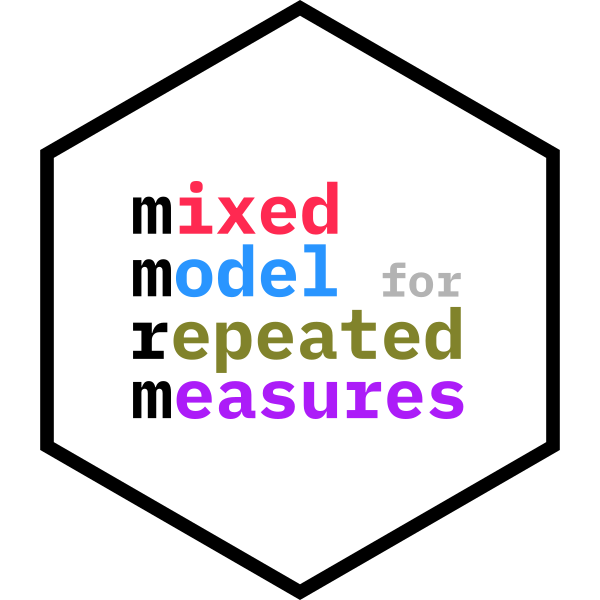

Creating F-Statistic Test Results For Multi-Dimensional Contrast
Source:R/testing.R
h_test_md.RdCreates a list of results for multi-dimensional contrasts using an F-test statistic and the given degrees of freedom.